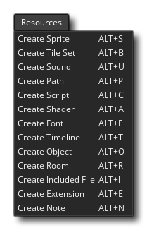

GameMaker Studio 2 有许多不同的编辑器，你可以使用它们来添加、删除和编辑游戏所需的不同资源。在开发过程中，你将需要使用这些编辑器中的一部分（甚至全部），而且你要知道用这些编辑器做事会有点无聊。为了提供帮助，你可以找到下面列出的每个不同的编辑器，单击它们中的任何一个，就会进入它的帮助页面，该页面将解释它是什么以及如何使用它。
精灵 图像 图块集 声音 路径 脚本 着色器 字体 时间轴 物体 房间 注释 内含文件 扩展 选项 配置
注意，当你使 资源树 获得焦点时，IDE 的顶部菜单有一个新菜单项：这允许你无需在单个资源文件夹上使用鼠标右键菜单 即可创建一个新资源。